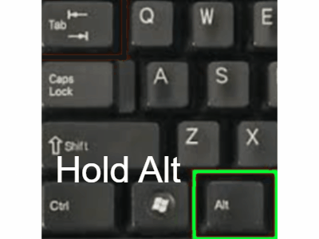

Quickly switch between this and your CAD software:
Hold
Alt
and tap
Tab
(or Keep holding
Alt
to see all open windows, then tap
Tab
to cycle through them.)
💡 Pros & Cons of CAD
🎨How Red or Black lines work
🟩 Red or Black lines
📝 Tutorial Page